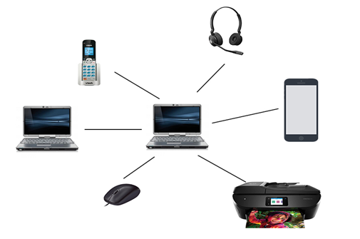

Computer Network
What is Computer Network?
Defintion: A computer network is a collection of interconnected computers and other devices that can communicate with each other to share resources, exchange data, or collaborate on tasks. These networks enable devices to connect and communicate with each other locally or globally, facilitating activities such as file sharing, internet access, email communication, and much more.
Types of Computer Network
A computer network can be categorized by their size. A computer network is mainly of four types:
- LAN(Local Area Network)
- PAN(Personal Area Network)
- MAN(Metropolitan Area Network)
- WAN(Wide Area Network)

LAN(Local Area Network)

- Local Area Network is a group of computers connected to each other in a small area such as building, office.
- LAN is used for connecting two or more personal computers through a communication medium such as twisted pair, coaxial cable, etc.
- It is less costly as it is built with inexpensive hardware such as hubs, network adapters, and ethernet cables.
- The data is transferred at an extremely faster rate in Local Area Network.
- Local Area Network provides higher security.
PAN(Personal Area Network)
- Personal Area Network is a network arranged within an individual person, typically within a range of 10 meters.
- Personal Area Network is used for connecting the computer devices of personal use is known as Personal Area Network.
- Thomas Zimmerman was the first research scientist to bring the idea of the Personal Area Network.
- Personal Area Network covers an area of 30 feet.
- Personal computer devices that are used to develop the personal area network are the laptop, mobile phones, media player and play stations.
There are two types of Personal Area Network:
- Wired Personal Area Network
- Wireless Personal Area Network
Wireless Personal Area Network:
Wireless Personal Area Network is developed by simply using wireless technologies such as WiFi, Bluetooth. It is a low range network.
Wired Personal Area Network:
Wired Personal Area Network is created by using the USB.
Examples Of Personal Area Network:
- Body Area Network: Body Area Network is a network that moves with a person. For example, a mobile network moves with a person. Suppose a person establishes a network connection and then creates a connection with another device to share the information.
- Offline Network: An offline network can be created inside the home, so it is also known as a home network. A home network is designed to integrate the devices such as printers, computer, television but they are not connected to the internet.
- Small Home Office: It is used to connect a variety of devices to the internet and to a corporate network using a VPN
MAN(Metropolitan Area Network)

- A metropolitan area network is a network that covers a larger geographic area by interconnecting a different LAN to form a larger network.
- Government agencies use MAN to connect to the citizens and private industries.
- In MAN, various LANs are connected to each other through a telephone exchange line.
- The most widely used protocols in MAN are RS-232, Frame Relay, ATM, ISDN, OC-3, ADSL, etc.
- It has a higher range than Local Area Network(LAN).
Uses Of Metropolitan Area Network:
- MAN is used in communication between the banks in a city.
- It can be used in an Airline Reservation.
- It can be used in a college within a city.
- It can also be used for communication in the military.
WAN(Wide Area Network)
- A Wide Area Network is a network that extends over a large geographical area such as states or countries.
- A Wide Area Network is quite bigger network than the LAN.
- A Wide Area Network is not limited to a single location, but it spans over a large geographical area through a telephone line, fibre optic cable or satellite links.
- The internet is one of the biggest WAN in the world.
- A Wide Area Network is widely used in the field of Business, government, and education.
Examples Of Wide Area Network:
- Mobile Broadband: A 4G network is widely used across a region or country.
- Last mile: A telecom company is used to provide the internet services to the customers in hundreds of cities by connecting their home with fiber.
- Private network: A bank provides a private network that connects the 44 offices. This network is made by using the telephone leased line provided by the telecom company.
Advantages Of Wide Area Network:
Following are the advantages of the Wide Area Network:
- Geographical area: A Wide Area Network provides a large geographical area. Suppose if the branch of our office is in a different city then we can connect with them through WAN. The internet provides a leased line through which we can connect with another branch.
- Centralized data: In case of WAN network, data is centralized. Therefore, we do not need to buy the emails, files or back up servers.
- Get updated files: Software companies work on the live server. Therefore, the programmers get the updated files within seconds.
- Exchange messages: In a WAN network, messages are transmitted fast. The web application like Facebook, Whatsapp, Skype allows you to communicate with friends.
- Sharing of software and resources: In WAN network, we can share the software and other resources like a hard drive, RAM.
- Global business: We can do the business over the internet globally.
- High bandwidth: If we use the leased lines for our company then this gives the high bandwidth. The high bandwidth increases the data transfer rate which in turn increases the productivity of our company.
Disadvantages of Wide Area Network:
The following are the disadvantages of the Wide Area Network:
- Security issue: A WAN network has more security issues as compared to LAN and MAN network as all the technologies are combined together that creates the security problem.
- Needs Firewall & antivirus software: The data is transferred on the internet which can be changed or hacked by the hackers, so the firewall needs to be used. Some people can inject the virus in our system so antivirus is needed to protect from such a virus.
- High Setup cost: An installation cost of the WAN network is high as it involves the purchasing of routers, switches.
- Troubleshooting problems: It covers a large area so fixing the problem is difficult.